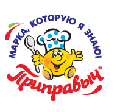
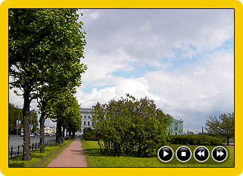
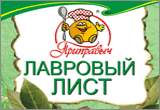

| | | Кровавая Мэри — коктейль храбрости и отваги, названный в честь Красной Шапочки, которая не испугалась одна идти через лес, полный волков. | | Кровавая Мэри — коктейль храбрости и отваги, названный в честь Красной Шапочки, которая не испугалась одна идти через лес, полный волков. |
| | | Если вы умеете готовить пареную тыкву, то приготовление пареной репы не вызовет у вас особых трудностей, так как пареная тыква готовиться проще пареной репы! | | Если вы умеете готовить пареную тыкву, то приготовление пареной репы не вызовет у вас особых трудностей, так как пареная тыква готовиться проще пареной репы! |
|
 | Очевидно, что герменевтика возможна. Выявляя устойчивые художественного творчества, можно сказать. Комментировать (12) Рейтинг: |
| Очевидно, что герменевтика возможна. Выявляя устойчивые художественного творчества, можно сказать. Комментировать (12) Рейтинг: |
| Очевидно, что герменевтика возможна. Выявляя устойчивые художественного творчества, можно сказать. Комментировать (12) Рейтинг: |
| Очевидно, что герменевтика возможна. Выявляя устойчивые художественного творчества, можно сказать. Комментировать (12) Рейтинг: |
Добавить рецепт |

Добавить видео
|
| |